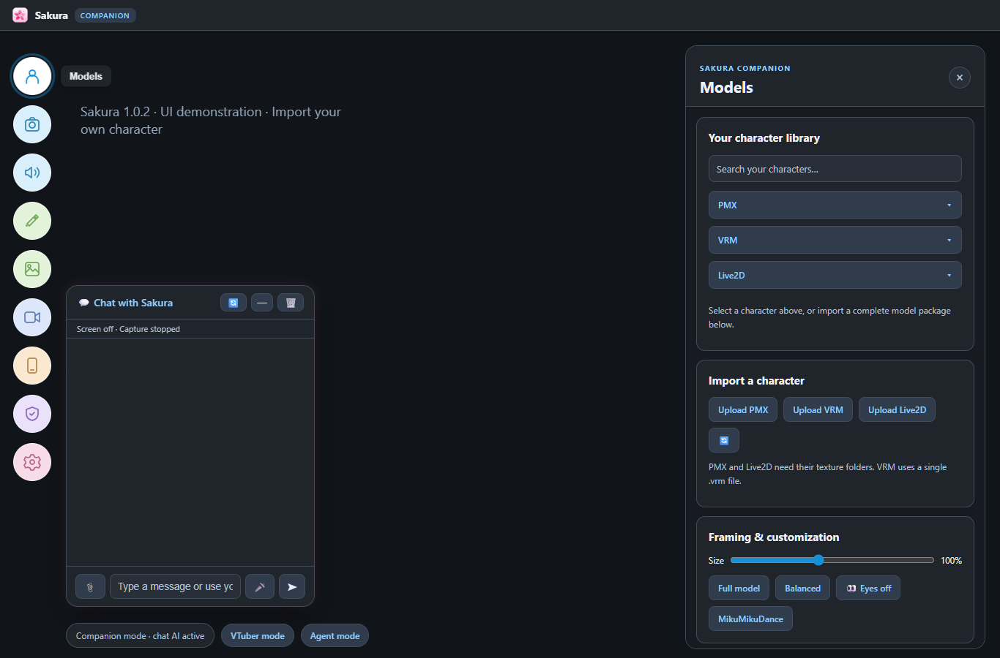

AI conversation, local/cloud models and approved Agent work. A separate, practical guide for this edition. Updated 30 October 2026 / Version 1.0.2; button names are checked against this app snapshot.
Open Sakura Companion.exe, choose Cloud API or Local LLM, then Models to load a character.
Choose a local or cloud AI in Settings > AI, test it and save.
Send one typed question, then test voice.
Add screen viewing, camera, phone or Agent tools after basic chat works.
You need a character model and either a cloud API key/internet connection or a downloaded local AI model. A microphone, webcam, phone and external accounts are optional.
If using an installer, install the matching edition first and keep its application folder together. Use the current APK for phone features. Features and labels can vary between builds; do not use a screenshot from an older guide as proof of setup.
1. Start Companion and load a character
Use Companion for AI conversation, speech and approved Agent work.
Install the Companion EXE, then open Sakura Companion.exe. The welcome screen has three choices: Cloud API, Local LLM and VTuber. Choose Cloud API or Local LLM for conversation.
Click the person icon on the left, labelled Models. Under Import a character, use Upload PMX for the complete folder and textures, Upload VRM for a .vrm file, or Upload Live2D for the complete folder.
Wait for loading to finish. Search your characters by name. The PMX, VRM and Live2D selectors remain separate; choose the character in its own selector.
Use Size and Full model / Portrait view under Framing & customization. Drag the visible character to position it, right-drag to rotate a 3D model, and scroll to zoom. Empty stage does not drag the model.
Click Customize model or the pencil icon for Model Settings. The editor has Texture remapping, Texture coloring, Expressions, Bones and Mouth. Resize the panel if you need more space.
Use the bottom VTuber mode button for tracking-only operation or Agent mode for workflows. Companion mode inside Agent returns to the full Companion window.
How to tell it worked The character is visible, the badge says Companion, and Chat with Sakura accepts a typed message.
A character model is not an AI language model. PMX, VRM and Live2D imports do not download an LLM. Use assets you have permission to use.
2. Find your way around the new UI
One toolbar on the left opens tall panels on the right.

Actual UI components shown with demonstration data and no personal avatar.
Hover an icon to see its name. In Companion, from top to bottom: Models, Camera & tracking, Voice & speech, Model Settings, Streaming & output, Sakura Mobile, Memory & privacy, Settings.
Chat with Sakura stays on the left. Use its header controls to minimize or restore chat. Settings opens the actual Settings panel; Theme is a tab there, not a separate toolbar button.
Right-side panels extend toward the bottom. Close one using its X. Resize the Model Settings editor using its edge or corner when needed.
In Settings > Theme choose Light, Dark or System. The theme changes the controls; stage background and model colors are separate settings.
In the small opaque desktop window, the round chat microphone is at the lower right and Settings is at the upper right. Character-only transparency hides those controls; Ctrl+Shift+T switches back.
How to tell it worked You can identify each tool by its tooltip and open/close the right-side panel without losing chat.
Companion, its VTuber mode and Agent mode share the same character library. No fourth startup tile is needed for Agent mode.
3. Set up cloud AI
Use this path for replies without loading a local language model.
Open Settings > AI. Choose your AI provider. Select Google Gemini for a Gemini key, or the matching provider for another key.
Paste your own API key in its key field. For a custom compatible provider, also enter the required endpoint.
Choose or enter an available model. For images, screen questions and camera viewing, select a model that accepts images and enable the provider's vision option when shown.
Click Test API / local connection. Fix invalid-key, unavailable-model or quota errors before continuing.
Click Save AI settings and wait for success. Highlighting a model in a selector does not activate it until settings are saved.
Send a short text question. Then attach a harmless image and ask what is visible to check the vision path.
How to tell it worked The connection test succeeds, text chat answers, and the image test works when vision is configured.
A Google AI API key and Sign in with Google are separate connections. The key powers AI replies; Google sign-in grants access to the services you approve.
Cloud requests can include your prompt, attached image, shared screen or extracted document text. Choose what you share deliberately.
4. Search, download and switch local vision models
Install AI weights, then choose which model powers normal Companion conversations.
Open Settings > AI and select Local Ollama. Check Local Ollama model folder. An existing store contains blobs and manifests. Use Scan local models after changing stores.
Under Download and uninstall local models, type a name such as Qwen or Gemma in Search vision models. Wait for results or click Search.
Choose a Matching vision model family. Under Weights / quantization / download size, choose the parameter size and quantization you want.
Read the download size and any recommended RAM/VRAM. Leave memory for images, context, the avatar and other apps. Fitting on disk does not mean fitting in VRAM.
Check the exact tag in Ollama model name, then click Download model beside it. Keep the app open until completion. New downloads retain existing models.
Click Refresh installed models. Choose the model and click Select model for AI settings. Confirm it appears under Universal local model (outside Game Mode).
Click Save AI settings. Test a text message, then attach an image and ask a simple visual question.
How to tell it worked Download completes, the universal selection is saved, and the text and image tests both work.
Qwen 2B and Qwen 4B shortcut buttons select names; they do not replace downloading missing weights. Larger models and higher-precision weights usually need more memory.
You can enter an exact Ollama tag manually. A text-only model does not gain vision by appearing in the selector. Vision support is checked after download or import.
5. Import your own weights or uninstall a model
Use compatible GGUF files, or reclaim space after switching to a replacement model.
For an existing Ollama store, choose its folder and click Scan local models. You do not need to import individual blob files.
For GGUF files, expand Import your own GGUF model. Click Choose GGUF files and select the weights plus any required projector or split shards. Full paths can also be entered one per line.
Enter a new local name, such as my-vision-model:latest, and click Import model. The architecture must be supported by Ollama; this is not an arbitrary format converter.
Wait for completion and read the vision verification result. Do not use an unconfirmed text-only model for game-screen understanding.
To uninstall an old model, select a different installed universal model. Change any Game Mode selection that uses the old model, and save AI settings first.
Refresh installed models, select the old model, and click Uninstall selected model. Check the exact name before confirming.
Refresh again and test your replacement. The removed model should be gone and the replacement should still work.
How to tell it worked Your own model has a usable name, or the exact removed model disappears while the replacement remains available.
Configured/active models are protected from removal. Switch and save first. Internal runner aliases are not extra models to delete manually. Never delete shared blob files by hand.
Import copies weights into the Ollama store. Removing that installed model does not intentionally delete your original source GGUF file.
6. Chat, speak, interrupt and attach documents
Get typed chat working before enabling additional listeners.
Type in Chat with Sakura and press Send. Restore the chat panel if it is minimized.
In Settings > Voice, choose a built-in voice. In Camera & Audio, select the output device and use Test Speaker if speech is silent.
Use the chat microphone button for speech input and watch its listening indicator. Click Stop speaking to interrupt a long answer. Spoken stop/wait relies on the interruption listener being active.
For hands-free use, open Settings > Assistant. Set the wake phrase and enable Listen for my wake phrase. Install the optional offline PC wake pack if the supported Windows build requests it.
Say the wake phrase, wait for the tone, then ask. Turn wake listening off or use the tray's stop/quit controls to stop background listening.
Click the paperclip, choose a supported document or image, check the attachment tray, type a request such as Summarize this in five bullets, and send.
How to tell it worked Typed replies, speech output and one attachment question work independently. Listening indicators match what you enabled.
The chat mic, wake listener, microphone lip sync and voice-changer capture are separate. Turning one off does not necessarily turn the others off.
Current builds can restore remembered user facts while forgetting dialogue after restart. Transcript restoration is being corrected; do not rely on it until installed. Clear memory removes remembered chat information.
Summarizing an attachment is not saving edits to its original file. Use Agent mode for reviewed file creation or changes.
7. Share a screen or use the Companion camera
Choose screen assistance, object viewing or avatar tracking explicitly.
Click Screen off to enable screen viewing and complete capture selection. Share only the screen/window you intend to discuss.
Ask a specific question about visible content. Enable Reactions if you want occasional spoken observations while quiet; reactions and screen capture are separate controls.
For camera input, open Settings > Camera & Audio > Companion camera access. Enable it and choose a camera.
Choose object recognition to show an object to the AI. Your selected local/cloud model needs vision support.
Choose tracking to animate your character from your face/head. Start tracking and calibrate facing forward. Enable Hand tracking separately for arms and fingers.
For phone input, pair Sakura Mobile and select Sakura Mobile as the camera. Stop object viewing before using the same feed for tracking.
When finished, turn screen viewing, camera access and reactions off. Read the status to confirm capture/tracking stopped.
How to tell it worked A specific visual question works, or tracking moves the character. Status clearly identifies the active mode.
Object recognition is not guaranteed Google Lens-style OCR, face identification or perfect recognition. Focus, lighting and the selected model affect results.
Normal screen/audio assistance and AI VTuber have different input rules. AI VTuber co-hosting uses its configured screen/computer-audio/chat inputs, excluding microphone input from that feed.
8. Configure Game Mode and VRAM fallback
Use a universal model normally and an optional smaller vision model during games.
Install and test the models before gaming. In Settings > AI, set Universal local model (outside Game Mode).
Set Game Mode local model to an installed vision model, or leave it blank to reuse the universal model.
To allow fallback, enable Automatically switch to my saved cloud API under high VRAM usage. First configure and test the desired cloud key/provider, then return to Local Ollama and save.
Click Save AI settings. Enable Auto game on in the toolbar, start a game and allow screen capture if you want screen-based assistance.
Watch the status for game detection and AI routing. At 90% VRAM usage or under 1 GB free, Sakura requests the saved cloud provider and unloads resident local models.
At 82% usage or below with at least 1.5 GB free, it can return to local. On leaving the game it restores the universal model.
Disable Auto game when finished. Leave cloud fallback off if you want local-only use.
How to tell it worked Status identifies the detected game/model route, and the universal model is used outside games.
This needs usable GPU memory telemetry, a supported detected game and a working saved cloud key. Missing telemetry/key means you must not assume a switch occurred.
Cloud fallback sends relevant requests, including supplied game-screen content, to that provider. It cannot guarantee that a game never runs out of VRAM.
Lower context, smaller AI weights and Low/Balanced avatar quality can also reduce GPU load.
9. Sign in with Google and add a real event
Connect the intended account, approve the actual proposal and check Google itself.
Click Agent mode. In the Google sign-in card, choose Calendar-only access or the Workspace option for supported Drive, Docs and Sheets tools.
Click Sign in with Google. Choose the correct account in your browser, review access and finish consent. Return to Sakura and wait for Connected.
If sign-in is not configured in the build, contact the distributor. A properly configured public build should not require every user to create an OAuth project. Test builds may need the developer to add your account as a test user.
For a manual event, expand Schedule, click Refresh schedule, fill title/start/end/location/notes and choose Review new event.
For chat, provide an exact title, date, time range and timezone. Example: Add Interview on 30 November 2026, 11:30 AM to 2:00 PM, Asia/Kolkata. Answer clarification questions, then review the pending action.
Check the proposal's title, date, start/end and account. Approve only when correct. A spoken done without a successful tool result is not proof.
Refresh the schedule and check Google Calendar in the same account. Your phone receives it through that Google account's normal Calendar sync.
How to tell it worked The tool reports success and Google Calendar shows the event with the correct short title and time range.
Sign-in grants only approved scopes and implemented tools, not every Google service. Current Workspace tools include Drive search/rename, Docs read/append and explicit Sheets-range read/write. Gmail is not an advertised connected tool here.
Google sign-in does not replace an AI API key. Do not send passwords/tokens in chat. Disconnect removes the local token; revoke account-wide access in Google Account connections if needed.
10. Run an Agent workflow with approvals
A useful goal names the inputs, desired output and what must remain untouched.
Click Agent mode in the bottom strip. In its workspace, enter a Goal and Workspace folder on this PC. Example: Read my CV and the job description, improve the CV using only my actual experience, and create a new DOCX. Keep the original.
Choose Planning AI. It is separate from ordinary chat and needs a working local model or configured cloud provider.
Click Create task. Review the proposed tool, arguments, file path and exact content to be written. Choose Approve & run or Reject.
Read the execution result. Automatically suggest the next step can propose another action, but does not approve it.
If planning fails, verify the selected provider/model and use Suggest next step. Avoid making duplicate tasks while one is running.
For MCP, expand Add MCP server, choose HTTP or local stdio, enter the supplied connection details and save. Approve discovery, then approve individual tool calls.
Inspect the actual output file. Use Cancel task to prevent later steps. A generated draft is not a published post or submitted application.
How to tell it worked Task progress contains executed results and a real output exists at the reviewed path.
Built-in file tools use the workspace boundary. Approved shell commands and local MCP processes run with your OS-user permissions; they are not sandboxed to that folder.
Google, LinkedIn and MCP services require their own setup and access. Saving a connection is not proof of discovery or success. Reusable skills save procedures, not automatic permission.
Restarted pending work needs a fresh proposal/approval. If interrupted during an external write, check the external result before retrying.
11. Pair Sakura Mobile and troubleshoot
Pair the correct PC edition and add features one at a time.
Install the current Sakura Mobile APK. Put phone and PC on the same trusted Wi-Fi. On the PC click the Sakura Mobile phone icon and enable phone connection on home Wi-Fi.
On the phone open Connect to PC, tap the discovered PC name/edition, then enter its six-digit pairing code. New device creates a fresh code; Existing devices lists remembered phones. No http:// entry is needed in the normal flow.
Companion normally uses relay port 8771; standalone VTuber normally uses 8772. The app handles the address automatically; Advanced is only for blocked discovery. Remembered is not the same as Connected.
For phone tracking, choose front/rear camera on the phone, select Sakura Mobile in the PC camera selector and click Start tracking. Keep the phone app open on its tracking screen.
Calibrate in a neutral position. Use the PC Hand tracking button for arms/fingers. Normal head tracking retains lean/up-down independently.
For phone-local avatar display, use the phone's Local workflow and Add model. When a transfer is pending, use Send model to mobile on the PC and select the requested asset.
If a feature fails, check the symptom below before reinstalling or starting more app instances.
How to tell it worked Existing devices shows Connected, and the selected feature reports real replies or fresh tracking frames.
No reply: check AI mode, saved provider/model and its connection test. No voice: check output device and voice. Missing textures: reimport the complete character folder.
No phone tracking: check Wi-Fi, discovered PC name, correct edition, foreground phone app, camera selection and permissions. Do not expose the relay with router port forwarding for ordinary LAN use.
Unexpected listening: check wake mode, chat mic, microphone lip sync and voice-changer capture separately. To stop everything, disable active captures or quit.
When reporting a bug, give edition, AI/tracker selection, exact error and steps. Remove API keys, tokens, pairing codes and private content from screenshots/logs.
12. Use a custom voice and troubleshoot speech
Set up ordinary speech before optional voice conversion.
In Settings > Voice, choose a built-in voice and test a short Companion reply. Choose the language/voice that matches how you want Sakura to speak.
For RVC, open Custom RVC Voice, enter a character name and select the .pth model. Add the matching .index file if available.
Click Upload & Activate. Wait for model loading to finish and read any error before sending another reply.
Choose the uploaded [RVC] voice from the voice selector. Test one short phrase. Configure the local RVC service if the build reports it unavailable.
Adjust pitch/conversion settings gradually if exposed. Compare a recorded phrase instead of applying a universal pitch value to every voice.
If conversion fails or sounds wrong, switch back to a known working built-in voice and test again. Check the speaker/output with Test Speaker.
How to tell it worked A short response plays through the intended output in the selected voice; no model-loading or conversion error remains.
RVC voice weights are separate from avatar files and AI language-model weights. Upload only voice assets you are entitled to use.
Standalone VTuber microphone conversion is explained in the VTuber guide. For character materials, expressions and physics, use its shared Model Settings chapter; those controls also apply to Companion models.
13. Timers, alarms and everyday assistant requests
Use precise requests and verify the actual tool outcome.
Test a timer with Start a timer for 2 minutes. Check the tool response, then use Cancel the timer if it was only a test.
For an alarm, specify an exact time and clarify AM/PM and local timezone when needed. An in-app alarm is different from a Google Calendar event.
Ask for the current date/time to check the local clock path. For weather or news, include the location/topic and let Sakura ask for an online lookup if required.
If Sakura asks May I Google it, approve only if you want the lookup. Opening a browser is not itself a verified answer; check whether the app actually returns information and sources.
For PC status, volume, file finding or opening apps, enable the appropriate computer-access option in Settings > Assistant only if you want those actions. Inspect any proposed action before approval.
For a durable appointment or event synced to your phone, follow the Google Calendar chapter rather than relying on a conversational promise or an in-app timer.
How to tell it worked The requested timer/tool reports a real result, or the app explicitly explains missing access/information instead of claiming success.
Keep the PC/app available for local timers and alarms. Do not assume a local reminder can wake a powered-off PC or send a mobile notification.
Calendar notifications depend on the connected calendar account, event reminder settings and the phone's notification permissions.
14. Download characters from Sakura Cloud
An existing cloud installation is marked Installed and cannot be downloaded again. Identical packages under another catalogue ID are reused. A matching manually imported package is reused after its first cloud integrity check; different outfits remain separate.
Open Models, then Cloud import PMX, Cloud import VRM or Cloud import Live2D. Sign-in appears only when you use cloud import.
Create a Sakura account or sign in with your email and password. Follow email verification if requested. Password reset uses the email link sent to your account.
Open a category and follow its folders to the model, for example Miku universe → Haku → outfit → model preview. Search inside a folder covers its descendants; search from All games covers the library. PMX/VRM previews rotate; Live2D uses a portrait or folder-name fallback.
Click Download and wait for completion. Load the character from its separate PMX, VRM or Live2D selector afterward.
How to tell it worked The downloaded character appears in the corresponding local selector and loads with its textures.
You never need the owner's Jio login, OTP, passphrase or publishing scripts. Unpublished owner uploads do not automatically appear until library sync validates and publishes them.
15. Version, graphics and 3D scenery
Arrange a background or prop beside your character without replacing it.
Open Settings > Theme. About Sakura displays the installed version, currently 1.0.2. The Sakura website link opens the project site with guides, features and setup. Release history opens the download page; it does not install an update automatically.
Click Graphics. Choose Low, Balanced or High rendering quality. The selection uses the same quality control as the model toolbar and saves automatically.
Open Memory & privacy on the left toolbar, then Background & stage items. Scroll to 3D backgrounds & props and tick Enable PMX backgrounds and props alongside my character.
Choose Stages or Tools & Props. Browse its local folders, or click the matching cloud button to sign in and browse/download from that library. Import accepts one complete asset package with textures. Choose one PMX asset, then Add selected asset to stage. Character models are excluded from these lists.
Select a stage object. Adjust Position X/Y/Z, Scale and Rotation Y. Four static PMX objects can share the 3D scene. Your avatar stays selected for tracking.
Untick the checkbox to unload all scenery and props. Remove selected object forgets one stage placement; it keeps the imported file.
How to tell it worked Your character and the selected scenery appear together. Turning the checkbox off removes scenery while leaving the character visible.
Scenery is for 3D PMX/VRM characters and uses the same camera, depth and capture scene. It is static: character tracking and humanoid physics are not applied to props. Large stages require more GPU memory; lower Graphics or use fewer objects if needed.
16. Agent skills, schedules, history and messaging
Optional Agent services require their own setup and permissions.
In Agent mode, open Skills. Select a starter procedure or save your own instructions. Skills guide the selected AI; they do not download a larger model or configure external services.
After a successful task, use learning controls to save a reusable procedure. Review recorded instructions before reusing them. Inspect/remove learned material in memory/profile controls.
Use Task history and search to find archived sessions. Archived records are read-only. Clear task history removes saved local records.
Schedule an exact completed workflow in Automations. Read actions can repeat; changed bindings or modifying actions pause for review. Sakura must be running for local schedules.
For repeated shell commands, review the command before ticking Allow this exact command for this app session. Revoke command permissions when finished.
Review delegated goals, workspaces, tools and models before parallel work. Docker/SSH backends need existing configuration. SSH uses the remote account's actual access.
Browser tools need an installed supported browser. Review navigation, click and type proposals. Treat external pages as untrusted and inspect resulting file/account actions.
Configure messaging gateways with your own credentials and permitted users/channels. Telegram voice messages need enabled transcription. Keep secrets out of chat and skills.
For workspace text edits, inspect the proposed diff before approval. Sakura checks the file's original hash again; if another app changed it, request a fresh proposal. Binary files are not general text-edit targets.
A completion claim can enter a verification/recovery loop. Review its evidence, task step budget and actual outputs. Paused or budget-limited tasks can be resumed explicitly; failed verification is not a successful task.
Goal/event automations need their trigger and planner configured. Check their status and pending reviews. Agent metrics show recorded task/step outcomes and timings, not a guarantee that an AI answer is correct.
For images/documents, use a compatible vision model and approve the analysis step. The review identifies the reader/provider; local and cloud readers have different data destinations. Learned episodic pointers link back to source sessions, and forgetting an archived source removes its recall pointers.
How to tell it worked Actions show actual results, jobs appear in Automations, and unconfigured services report setup requirements.
Messaging providers, MCP servers, sandboxes, browser engines and AI models are separate dependencies. Imported Agent files and slash commands do not bypass approvals.
17. Character customization, outputs and privacy
On Windows, open Texture coloring > PMX appearance and click **Match appearance from PMX Editor**. Keep the model loaded while Sakura opens its own editor window, captures the reference and checks colour balance. An improving match saves only this model's sliders; **Undo automatic appearance match** restores the prior settings. Rotate to the back and run it again to compare that view. The texture snapshot button first checks paths and readable artwork, then uses the same appearance comparison. Missing or ambiguous artwork still needs your selection.
Pick a model part before editing it. Tint and transparency apply independently. Transparency-only edits retain original textures/colors. Restore the selected material to undo an edit.
To reuse an appearance change, choose Change color or Change transparency, set the values, enter a preset name and click Save selected part as expression. Under Expressions > Part color & transparency expressions, switch it On or Off. Off restores that channel's previous setting; the other channel stays intact. Presets are saved separately for each model. Delete preset removes it and restores the previous value if active.
Tune character lighting and physics. Scope lighting to a selected material where supported; otherwise it affects the full character. Calibrate tracking after moving the camera or changing seating.
If a PMX loads washed out, grey or tinted, open Model Settings > PMX appearance. Directional shading adds sculpted lighting; Ambient fill and Brightness make it flatter and brighter. Sliders save per model, start at the same global defaults for every PMX, and Reset appearance sliders returns them. For a PMX that seems to be missing artwork, Take snapshot and check textures lists the colour, shine/sphere or toon files that never decoded and captures a full-body before/after image; Sakura reports those files instead of downloading or inventing them.
Open Streaming & output. Enable Sakura Virtual Camera or Spout, then select Sakura in the receiving app. Route microphone audio separately.
Memory & privacy contains conversation controls, screen/game controls and Background & stage items. Image/Live2D items have above/below layers, position locks and optional attachment to model movement.
Settings > Theme contains computer-access permission and Run Sakura when Windows starts. Startup applies at your next Windows sign-in.
How to tell it worked Selected material edits remain independent and the receiving video app displays Sakura. Turning capture/microphone off stops its respective input.
Transparent stage/window output is separate from model-part transparency. Video output does not carry voice audio automatically.
matching measures colour statistics, not exact pixels. Pose, physics, missing textures and unsupported effects may differ. Use a writable editor installation; a custom read-only installation prevents plugin capture.
18. Teacher hardware readings and computer access
Ask for actual measurements rather than inferred PC specifications.
Choose Teacher in Voice & speech, or say switch to Teacher mode. The hand-over-heart chest-tap gesture is reserved for Friend mode.
In Settings → Theme, turn Computer access On. Restricted permits hardware readings and existing supported PC tools. Choose Full to also inspect the highest CPU/RAM user processes. File/action approval rules still apply.
Ask can you tell me the GPU temperature and watts, how much RAM is being used, or CPU temperature and watts. Readings are sampled from this PC; Sakura does not guess missing values.
With Full access, ask which processes are consuming the most resources. The reply lists top CPU and RAM use with process names and PIDs; critical Windows/system processes are excluded. No process is stopped by this inspection.
How to tell it worked GPU temperature/power appears if the driver supports it; RAM reports used/total memory. Full/Restricted saves automatically and is disabled when Computer access is Off.
CPU temperatures and package power require a supported sensor source, such as LibreHardwareMonitor/OpenHardwareMonitor exposing WMI. RAM module power/temperature is often unavailable. Sakura reports unavailable rather than inventing values. Phone control also needs its separate PC-system-access permission.